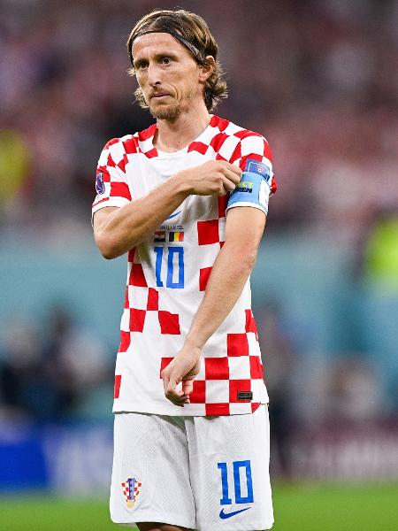

O Modrić é um croata que atualmente joga no time do Real Madrid número 10 e do time da Croácia número 10. Ele é o jogador mais velho da croácia e em 2018, Fifa World Cup Rússia 2018 e também foi no 2º lugar e no Fifa World Cup Qatar 2022 foi no 3º lugar.
